| Animas Forks is found at 11,200 feet above sea level and was the northern terminus of the Silverton Northern Railroad. The Silverton Northern was one of the railroads Otto Mears built out of Silverton to tap the rich mines in the mountains surrounding it. It was once said by a local magistrate that because Animas Forks was at such a high elevation, there was no appeal from a verdict rendered there, it was the highest court in the land. |
| As mining development increased in and around Animas Forks, there became a need for economical transportation of supplies and mine production. Otto Mears completed a toll road between Animas Forks and Lake City in 1877. This toll road and the road to Silverton allowed materials and supplies to flow in and out to two of the regions largest mining centers. The toll road later became the Silverton Northern Railroad. |
| The extension of the Silverton Northern was completed in November of 1904. The threat of the Silverton, Gladstone and Northerly extending a line up to Animas Forks, to tap the output of the rich Gold Prince mine, finally made the extension a reality. A route was surveyed from Animas Forks to Lake City but was never completed. Lake City was very prosperous at the time and offered much traffic to the Denver and Rio Grande. Today the old roadbed of the Silverton Northern allows us to visit the site of Animas Forks in a passenger car, weather permitting. I made a visit in the fall of 1989 and brought back a few photos of the area. |

|
Lake City, above Animas Forks, was very prosperous and offered a lot of traffic to the Denver and Rio Grande Railroad
(Image m0004)(132k) |

|
Mineral Point was located just above
Animas Forks (Image m0006)(132k) |
| As stated earlier, the road to Animas Forks is built mostly on the original railroad grade of the Silverton Northern. If you have access to Sundance Publication's book, "The Rainbow Route," take it along as it helps to identify landmarks. I have taken several trips up into the surrounding gulches and canyons in the area and had some interesting adventures. Before starting on these trips know the limits of your vehicle and driving skills. Also stop in Silverton and purchase a good topographical map with the trails marked for you. |
| One of my more interesting trips involved Animas Forks. I began the trip just past the site of Eureka on the road to Animas Forks. I went west up Picayune Gulch on Colorado Road 9 (see maps below). This trail took me past the ruins of former mining activity. At the top of this trail I found the remains of the Gold Prince Mine. The weather and time have been very hard on the remaining structures in this area, but surprisingly several structures remained. |
| The Gold Prince Mine was found at the top of Placer Gulch in Mastodon Basin. The mine and mill were separated by more than two miles of very steep terrain. The mine was connected by a Bleichard cable tramway, 12,600 feet in length, the construction of which required 50,000 feet of steel cable. The tramway had a speed of 350 feet per minute, and could transport 50 tons of ore per hour. All of the materials used in the mine were transported up the tramway. Many tramway towers where still standing at the time of my visit. The fact that the towers were still standing is amazing, when you think about it, and a tribute to the handiwork of the miners. |
| The mine had a large boarding house of the finest quality where the miners lived. It is a real experience to be up above timberline in an area like this. One can really find some peace and quiet up there. The altitude is a little rough on the system though, so be careful when walking about. I cannot imagine how tough it would have been to live and work at this altitude. I spent a few years as a miner at the Bingham Canyon mine of Kennecott Copper Co. I thought the winters at 7,000 feet were rough but at least I could go home at night to a warm house. These men were at 12,000 plus feet in snow several feet deep. |
|
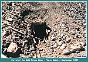 |
Gold Prince Mine Portal
(145k) |

|
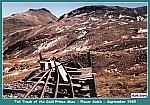 |
Gold Prince Mine in Mastodon Basin
(116k) |

|
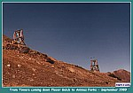 |
Tramway from Gold Prince Mine
to Gold Prince Mill (61k) |

| As I followed Placer Gulch down into Animas City, Tramway towers lead my way. Just before reaching Animas Forks, the remains of the Frisco (Bagley) Tunnel Mill can be seen. This is a very large mill structure, which at the time of my visit, had just about collapsed. This mill was built at the suggestion of Otto Mears as he felt the owner would find great amounts of high paying ore. An extension of the Silverton Northern from Animas Forks was planned to the mill but only got as far as grading when the plans were finally abandoned. |
|
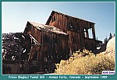 |
Remains of the Frisco or Bagley Tunnel
(77k) |

|
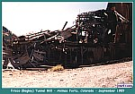 |
Remains of the Frisco or Bagley Tunnel
(79k) |

| As one enters Animas Forks proper, the first and most noticeable building is the former Walsh home. Thomas Walsh came to America from Ireland in 1851 at the age of 14. He worked in several mining camps as store keeper and hotel manager. Walsh managed the Grand Hotel in Leadville for a time. While in Leadville Walsh made his first fortune but like others lost it in the silver panic of 1893. |
| In 1854, Walsh and family moved to Silverton where he built a mill to treat the ore of the area mines. While looking for ore to process, Walsh decided to buy several claims in the Imogene Basin area over the hill from Telluride. He consolidated the claims into the Camp Bird Mine. The mine was named after the "Canadian Jay," a bird the miners called "camp robbers." These claims made Walsh a millionaire again when he sold them to an English syndicate in 1902 for the unbelievable sum of $5,200.000.00. He moved to Washington, D.C. to hobnob with the social elite where he died of lung cancer in 1910. One of the surviving homes in Animas Forks is said by some to have belonged to Thomas Walsh. The home is in fact known as the Duncan home. |
|
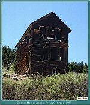 |
Animas Forks, Colorado
"The Duncan Home" (148k) |

|
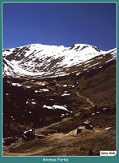 |
Birdseye View of Animas Forks, Colorado
(124k) |

|
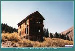 |
Animas Forks, Colorado
"The Duncan Home" (148k) |

| Animas Forks also has other surviving structures from its glory days. A building that is supposed to be the town jail is pictured below. The only indication of the building being a jail was the way it was constructed. The walls were made of thick timbers stacked one on top of the other to form very thick and hard to penetrate walls. I would bet one night in this lock up would put you back on the straight and narrow. |
|
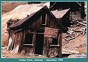 |
Weathered structure in Animas Forks
(93k) |

| The foundation of the once great Gold Prince Mill was still visible as was the location of the railroad's turntable. The Gold Prince mill was at the time a very large and imposing structure. The mill had 100 stamps and had a capacity of 500 tons per day. The mill was the largest in the state of Colorado, and with a cost of $500,000.00 was probably the most expensive to build. The construction of the huge mill coincided with the completion of the Silverton Northern extension from Eureka. This gave the railroad a flood of traffic in construction materials, and when complete, processed ore for transport. |
|
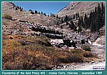 |
Ruins of the Gold Prince Mill
(110k) |

|
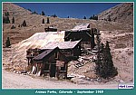 |
View of the remains of Animas Forks
(92k) |

| While in Animas Forks taking photographs, I had the misfortune of meeting two lovely young ladies. They told me they were locals and did a lot of off roading in the area. They said I had not lived until I had been down the Black Bear jeep trail. They assured me it was an easy trip and I would enjoy it. I had read in a 4X4 manual that the Black Bear trip was a 5, on a scale of 1 to 5 with 5 being the most difficult. I am sure a least a few of you have heard the song about this trip that C.W. McCall did back in the late 70's. |
|
When I asked them if they thought it was a tough trip, they assured me anyone could do it and that the difficulty was just hype to get the tourists to come. Well, I took their advice and realized about half way into the trip that these two lovely ladies where probably having a game of "let's mess with the dumb tourists." After I had a few stiff ones at the bottom of the hill in Telluride, I decided It had been a great trip.I don't know if I will do it again. To read about my adventure on the Black Bear Road go to the 4 X 4 Adventures in the San Juan Mountains page. |

|
The Narrow Gauge Circle is written, maintained,and hosted by: Mark L. Evans Send Comments to:Mark L. Evans All original materials, text, and digital images Copyright © 1995-2010 Mark L. Evans. All rights reserved. Imitation is said to be the "sincerest" form of flattery.....Please don't flatter us without permission. |